2.4 Assembly: Going Live on GitHub
You've built the structure (HTML), the style (CSS), and the interactivity (JavaScript). Right now, though, your site only exists on your H: drive, so nobody else can see it. Today the Web Department ships. You'll put your project folder into Git, the tool every real studio uses to track changes to code. Then you'll get an AI to clean up your code, push it all to GitHub, and turn it into a real, live website with its own URL. Work through the tasks in order, because each one depends on the one before it.
Before You Start
- Open your project folder in VS Code, the same
H:\ICT 9\2_web_development\your-slugfolder you've used all unit. No new download needed. - Check the Explorer sidebar. You should see
index.html,about.html,work.html, and yourcss,js, andimagesfolders directly inside it, with no extra folder in between. - Have a browser tab open and ready. You'll be creating an account and signing in during class.
Four words you'll hear today
- Repository (repo): a project folder that Git is keeping track of.
- Commit: a save point. It's a snapshot of every file at one moment, with a short message describing what changed. You can always go back to one.
- Push / Sync: sending your commits from your computer up to GitHub.
- GitHub Pages: a free GitHub feature that turns a repo into a live website.
Find your spot
- Task 1 — Pre-flight check: haven't done anything yet? Start here. This includes the 20 Questions oversharing audit.
- Task 2 — GitHub account: no account yet, or you haven't verified your email.
- Task 3 — First commit: you have an account, but the Source Control panel still says "Initialize Repository."
- Task 4 — AI code cleanup: your first commit is done.
- Task 5 — Publish and go live: your "AI code cleanup" commit is done.
- Task 6 — Ship an update: your site is live.
Task 1 — Pre-flight check: polish and privacy
Once your site is live, anyone on the internet can see it. Your teacher, your family, a future employer, and total strangers can all open it. Before anything gets published, go through this checklist.
Polish
- Open all three pages in Live Preview and click every nav link. Every page should load, with no broken links.
- Check every file name. Names should be all lowercase, with no spaces.
avatar.pngis fine, butMy Avatar.PNGisn't. Rename any that break the rule, then update thesrcorhrefthat points to them. - Your home page must be called exactly
index.htmland sit directly in your project folder, not inside a subfolder.
images/avatar.png and the file is really Avatar.png, the
image works on your computer and is broken on your live site. Fix it now, while it's easy.
Privacy
Go through all three pages, including your 20 Questions, and remove anything on this list:
- Your last name (your first name, or first name plus last initial, is fine)
- Your school name, home address, neighbourhood, or phone number
- Your birthday or exact age
- Photos of your face or of other people. Your cartoon avatar is exactly what it's for.
- Personal email or social media handles
Quick test: would you be fine with this page being printed and taped up in the hallway? If not, take it out.
Oversharing audit: your 20 Questions
The list above catches the obvious stuff. Oversharing is sneakier. Each answer on its own seems harmless, but put together, they can add up to a lot: where you'll be on Saturday, what your passwords might be, or enough clues for a stranger to work out who you are. Time to look at your 20 Questions the way a stranger would.
- Open
about.htmland read your 20 answers slowly, as if you were a stranger who has never met you. - Rate each answer:
- 🟢 Safe: general likes and opinions. "Pizza." "Flight." "Night owl."
- 🟡 Think twice: specific details that narrow down who or where you are. Team names, specific places, your pet's name.
- 🔴 Overshare: tells a stranger where to find you, or could help someone get into your accounts. Your full birthday, your schedule, your school.
- Check your answers against the three overshare traps below.
- Rewrite every 🔴 answer and most 🟡 ones. Rewrite them rather than deleting them, so the page is still about you, just less specific (see the examples).
The three overshare traps
- Password-reset answers. "What was your first pet's name?" and "What month were you born?" are classic security questions for resetting passwords. Questions 2 (birth month) and 11 (pets) are the ones to check. Keep your star sign or say "a dog," but leave out the month and the pet's name.
- Location + schedule. "I skate at [park name] every Saturday morning" tells a stranger exactly where you'll be and when. Check questions 4, 6, and 18 (hobby, sports, weekends).
- The puzzle effect. First name + a team name + a neighbourhood + a birth month might be all it takes to find you. Read all 20 answers together and ask: what could someone piece together?
| Overshare 🔴🟡 | Still you, less specific 🟢 |
|---|---|
| I'm a Leo, born August 9th. | I'm a Leo, a summer baby. |
| My dog Biscuit is a golden retriever. | I have a golden retriever who steals socks. |
| I play centre-back for the [club name] U15 team, Tuesdays at [field name]. | I play soccer, and I'm a defender. |
| Every Saturday I'm at [skate park] from 9 to noon. | Weekends are for skateboarding. |
| I'd love to visit Japan because my grandparents live in Osaka. | I'd love to visit Japan for the food and the arcades. |
Task 2 — Create your GitHub account
GitHub is where more than 100 million developers store their code, and it'll host your site for free. Your username becomes your website address, so choose it carefully.
Choose your username first
- Your site will live at
https://username.github.io. Say it out loud: would you be happy putting it on a résumé? - Use lowercase letters, numbers, and hyphens only.
- No last name, no birth year, no school name. Try your slug plus a studio word, like
emma-r-studiooremmar-dev. - Your first choice will probably be taken, since usernames are shared with every GitHub user in the world. Have two or three backups ready.
Sign up
- Go to github.com/signup.
- Enter your school email address.
- Create a new password you haven't used anywhere else, and write it down somewhere safe (not on a sticky note on the monitor).
- Enter your username and finish the puzzle check.
- GitHub emails you a code. Open your school email, copy the code, and paste it into GitHub.
- If GitHub asks you a few "personalize your experience" questions, you can skip them.
- Write your exact username on the class sign-in sheet your teacher shares.
Task 3 — Make your first save point (commit)
Now you'll turn your project folder into a Git repository and take your first snapshot. This happens only on your computer. Nothing goes online until Task 5.
Step 1: Turn on Git for this folder
- In VS Code, open the Source Control panel. It's the icon in the left sidebar that looks like a branch with three dots, or press
Ctrl + Shift + G. - Click Initialize Repository.
- All your files now show up under Changes with a green U (untracked) next to them. That's normal. It means Git can see them but hasn't saved them yet.
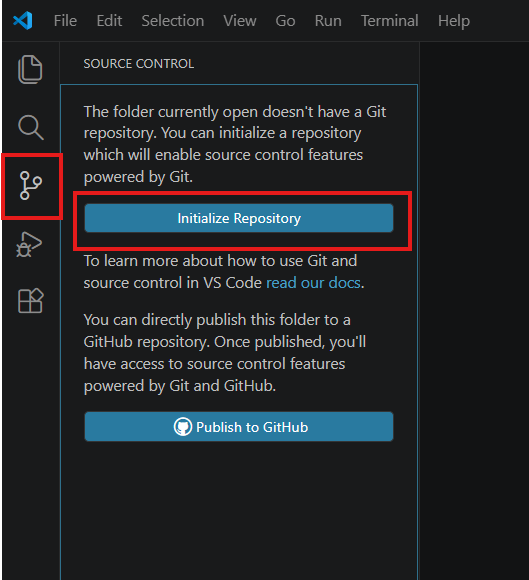
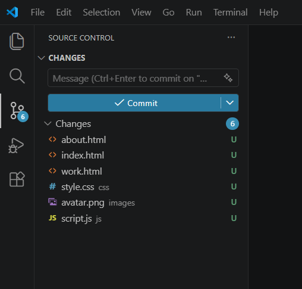
Step 2: Tell Git who you are (one time only)
Every commit is signed with a name and email. You'll use a private GitHub email, so your real school email never appears in public.
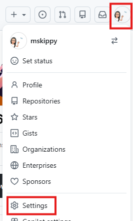
- On github.com, click your profile picture (top right) → Settings → Emails.
- Turn on Keep my email addresses private. GitHub then shows you a private address that looks like
12345678+username@users.noreply.github.com. Copy it.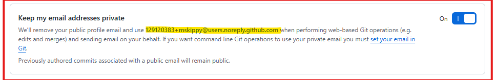
Switch it On. The highlighted address is the one you copy. Yours has your own numbers and username. - Back in VS Code, open the terminal: Terminal → New Terminal (or
Ctrl + `). - Type these two lines, pressing Enter after each one. Swap in your own username and the private email you just copied, and keep the quotation marks:
git config --global user.name "your-username" git config --global user.email "12345678+your-username@users.noreply.github.com"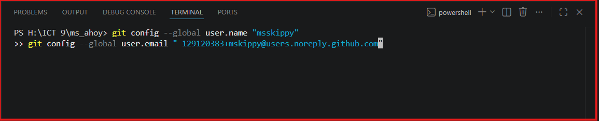
What it looks like in the terminal. Nothing prints back when it works, and that's normal. Can't see the terminal? Use Terminal → New Terminal, or the panel toggle icon at the top right of VS Code.
Step 3: Commit
- In the Source Control panel, hover over the word Changes and click the + (Stage All Changes). Your files move up into Staged Changes.
- In the message box at the top, type:
First version of my studio code - Click the blue Commit button.
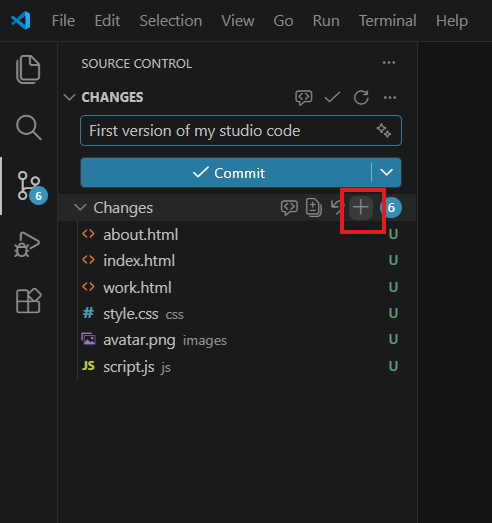
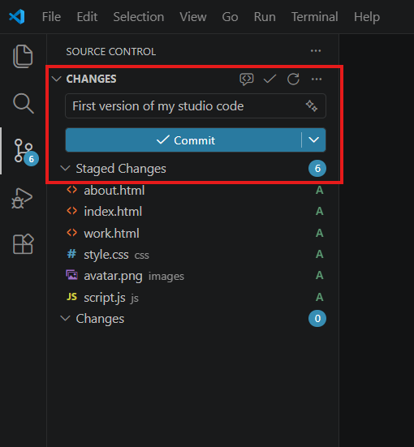
- VS Code shows a "Download Git" button instead of Initialize Repository. This computer doesn't have Git installed. Move to another computer, or check with your teacher.
- An error mentions "dubious ownership" or "safe.directory". Git is being cautious because your folder is on the H: drive. In the terminal, type this and press Enter:
Then pressgit config --global --add safe.directory "*"Ctrl + Shift + P, type Reload Window, press Enter, and try again.
user.name and user.email. Step 2 didn't take, so redo it and check the quotation marks.
Task 4 — AI code review: clean up the scary code
Four weeks of copying, customizing, deleting, and re-trying leaves a mess: unclosed tags, wonky indentation, CSS rules that don't do anything, and leftover experiments. Real studios run code reviews before anything ships. Yours will be done by an AI, and you're the one who approves it.
Because you just made a save point, this is completely safe. If the AI breaks something, you can undo it with one click.
Step 1: Get the AI to clean up one file
- Open the AI tool of your choice (any of the ones allowed in class).
- Copy the prompt below and paste it into the AI. Fill in the file name at the end.
- In VS Code, open
index.html, pressCtrl + AthenCtrl + Cto copy the whole file, and paste it into the AI right after the prompt.
I'm a Grade 9 student and this is my first website, built with HTML, CSS and JavaScript. Please clean up the code below.
Rules:
- Keep how the page LOOKS and WORKS exactly the same.
- Fix indentation, close any unclosed tags, fix errors, and remove anything that is duplicated or unused.
- Do NOT change any id or class names, file names, or the text on my page.
- Do NOT add new features, frameworks, libraries, or links to other websites.
- Keep it at a beginner level so I can still understand every line.
- Give me the full cleaned-up file first, then a short list of every change you made and why.
My file is called: ________Step 2: Paste it back in and test it
- Copy the AI's cleaned-up file. In VS Code, select everything in
index.html(Ctrl + A) and paste over it. - Check Live Preview. The page should look and work exactly like it did before. Click everything, including your JavaScript buttons.
Step 3: Review every change (this is the important part)
- In the Source Control panel, click
index.htmlunder Changes. VS Code opens a side-by-side view: red is what the AI removed, and green is what it added. - Read every change. For each one, you should be able to say what it does.
- Don't understand a change? Ask the AI: "Explain this change like I'm new to coding." Still not sure? Don't keep it.
- If the AI broke something, right-click the file under Changes → Discard Changes. You're back to your save point, and you can try again.
Step 4: Repeat, then commit
- Do the same for
about.html,work.html,css/style.css, andjs/script.js, one file at a time. - When all five files are cleaned up and tested, stage everything (+) and commit with the message:
AI code cleanup
- A new
<script src="https://...">or<link href="https://...">pointing to another website that you didn't add. Delete it. - A changed
idorclassname. This silently breaks your JavaScript or CSS. - Your own words rewritten, or whole sections gone missing.
- A file that suddenly got much longer. The AI probably added features you didn't ask for.
Task 5 — Publish to GitHub and go live
This is the moment your site hits the internet.
Step 1: Push your repo to GitHub
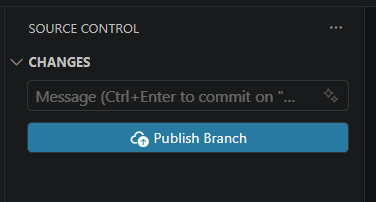
- In the Source Control panel, click the blue Publish Branch button.
- VS Code asks to sign in with GitHub. Click Allow, sign in in the browser window that opens, and click Authorize. Then go back to VS Code.
- A box appears at the top of VS Code with your folder name in it. Delete that name and type exactly:
using your GitHub username, spelled exactly the way it is on GitHub.your-username.github.io - Choose Publish to GitHub public repository. (Free GitHub sites have to be public.)
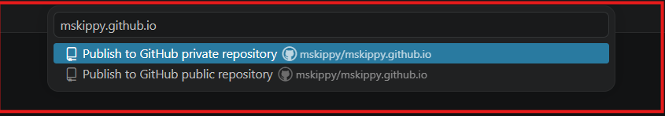
Watch out: VS Code highlights private first. Don't just press Enter. Click the second option, public repository. - When VS Code shows a message that it published successfully, you can click Open on GitHub to see your code online.
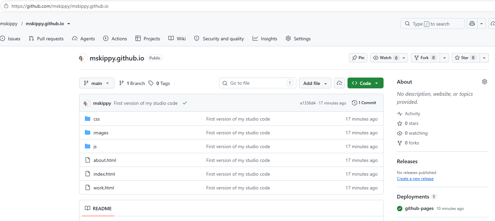
Pushed! Your files are on GitHub. Check that the name is your-username.github.ioand that it says Public. Settings is at the right end of the top menu.
.github.io. If you keep your folder name (like emma-r), your site still
works, but it ends up at a longer address (username.github.io/emma-r). Ask your teacher if
that happens, or fix it yourself: on GitHub, open your repo → Settings → change the
Repository name to your-username.github.io → Rename. VS Code keeps syncing to it.
Step 2: Turn on GitHub Pages
- On your repo's GitHub page, click Settings (the gear tab along the top) → Pages in the left menu.
- Under Build and deployment → Source, choose Deploy from a branch.
- Under Branch, choose
mainand/ (root), then click Save. - Wait 1 to 5 minutes. You can watch the progress in the Actions tab, or under Deployments on the right side of your repo's front page. A yellow dot turns into a green check when it's done. Refresh the Pages settings and your live link appears at the top.
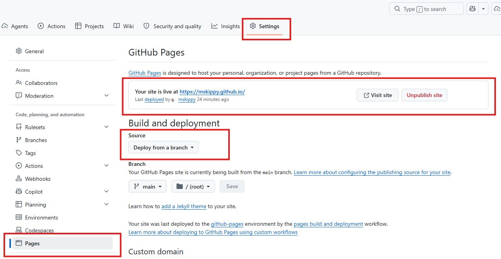
Step 3: Test it for real
- Open
https://your-username.github.io. That's your site, live on the internet. - Click every nav link and every button. Check that your avatar shows up.
- Open it on your phone too. It should work anywhere.
- Post your live URL to the 2.4 Teams assignment.
https://your-username.github.io on a different device, every page and image works, and the URL is posted in Teams.
index.html. Check that it's spelled in lowercase and sitting at the top of your repo, not inside a folder. A broken image that works locally is almost always a capital letter in the file name (see Task 1). No Pages option, or it says you need to upgrade? Your repo is private. Go to Settings → scroll to Danger Zone → Change visibility → Public.
Task 6 — Ship an update
Your site isn't finished. It'll get new projects every unit for the rest of the course. Here's the loop you'll use every time: edit → commit → sync.
- Make one small change. For example, add
<p>Last updated: October 2026</p>to your footer on all three pages. - In Source Control, stage (+), type a message that describes the change (
Add last-updated date to footer), and click Commit. - Click Sync Changes. The little ↑1 means one commit is waiting to go up.
- Wait about a minute, then reload your live site with
Ctrl + F5(a hard refresh).
Ctrl + F5. Renamed a file only to fix its capital letters, and Source Control doesn't show any change? Git on Windows misses that. In the terminal, use git mv images/Avatar.png images/avatar.png (with your own file names), then commit and sync.
Make your repo look professional
Optional. Unlocks after Task 6 is done.
Studios judge developers by their repos as well as their sites. Make yours look like it belongs to a professional.
- Add a README. Create a new file called
README.mdin your project folder. GitHub shows it on your repo's front page. Include what the site is, what you built it with, and one thing you're proud of:# My Studio Profile This is my portfolio site for ICT 9 at the Studio. ## Built with - HTML, CSS, and JavaScript - VS Code, Git, and GitHub Pages ## Proud of The click-to-reveal skills list on my About Me page. - Validate your code. Paste your live URL into the W3C Markup Validator. Fix any errors it finds on all three pages.
- Add a repo description. On your repo's GitHub page, click the gear next to About (on the right), write a one-line description, and tick Use your GitHub Pages website.
- Commit and sync.
Checkpoint (self-assessed): your repo's front page shows your README and a link to your live site, and the validator shows no errors.
Pick one or more
Custom 404 page
Create a 404.html at the top of your repo. GitHub Pages shows it automatically whenever someone visits a page on your site that doesn't exist. Make it on-brand and funny, with a link back home.
Link preview card
Add Open Graph <meta> tags (og:title, og:description, og:image) to your <head> so your site shows a proper preview card when someone pastes the link in a chat.
Lighthouse audit
On your live site, open DevTools → Lighthouse tab → Analyze. Try to get your Accessibility score to 90 or higher, and write down what you changed to get there.
Time travel
On GitHub, open your repo and click the commits link (the clock icon). Open your "AI code cleanup" commit and read the diff online. Can you find a change the AI made that you'd now do differently?
Automatic "last updated" date
Replace your hand-typed footer date from Task 6 with one your JavaScript fills in by itself, using document.lastModified.
GitHub profile README
Create a repo named exactly your username (no .github.io). Its README shows up on your GitHub profile page. Introduce yourself as a studio developer (same privacy rules as Task 1) and link to your site.
Checkpoint for any Black task: it's committed, synced, and working on the live site, not just on your computer.
Before You Leave Class
School computers are shared, so sign out so nobody else can push to your site:
- In VS Code, click the Accounts icon (the person icon at the bottom of the left sidebar) → your GitHub account → Sign Out.
- In your browser, sign out of github.com.
Next class, VS Code asks you to sign in again the first time you click Sync. That's normal.